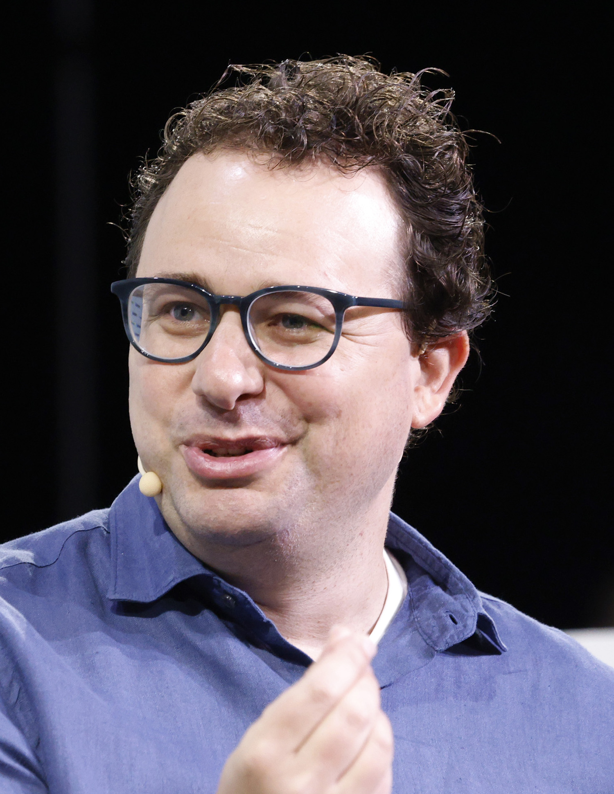

Sam Altman
דמות מרכזית בהפיכת ChatGPT וה־AI היוצר לכלים ציבוריים רחבי שימוש.
למידע מורחבPeople
אגף זה מציג יזמים, חוקרים ומנהיגים טכנולוגיים המזוהים עם חברות מרכזיות במוזיאון — ומחבר בין האנשים, החברות והטכנולוגיות שעיצבו את מהפכת ה־AI.
דמות מרכזית בהפיכת ChatGPT וה־AI היוצר לכלים ציבוריים רחבי שימוש.
למידע מורחב
מייסד־שותף של DeepMind ודמות מרכזית בהישגים כמו AlphaGo ו־AlphaFold.
למידע מורחב
מוביל את Anthropic ואת הדיון סביב בטיחות, אמינות ומודלי שפה אחראיים.
למידע מורחב
מייסד־שותף ומנכ״ל NVIDIA, חברה שהפכה לתשתית מרכזית של מהפכת ה־AI.
למידע מורחב
יזם טכנולוגי המזוהה עם xAI ועם הדיון הציבורי הרחב על עתיד הבינה המלאכותית.
למידע מורחב
מייסד־שותף ומנכ״ל Mistral AI, מהדמויות הבולטות בעליית ה־AI האירופי.
למידע מורחב
מדען ויזם ישראלי בולט, המזוהה עם AI21 Labs ועם תרומה עמוקה לעולם ה־AI.
למידע מורחב
יזם ישראלי ומייסד־שותף של Wiz, המזוהה עם הצלחת חברות הענן הישראליות בעולם.
למידע מורחב